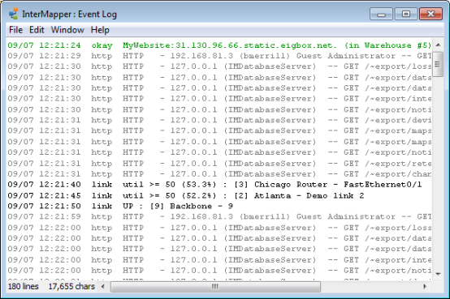

InterMapper writes information about interesting events into event logs. These streams of information are written to log files on-disk, and can be viewed in one of the Log windows. The Event Log is a pre-defined log file which serves as a default "catch-all" log file.

The main Event Log window. It can show information about device ups and downs, high traffic on links, web, telnet, and InterMapper RemoteAccess server connections, as well as error messages.
As entries are written to the Event Log file, (stored in the InterMapper Settings/InterMapper Logs" folder) they are also placed at the bottom of this window.
If the window is scrolled to the very bottom of the Event Log, it scrolls automatically as new events are appended to the log.